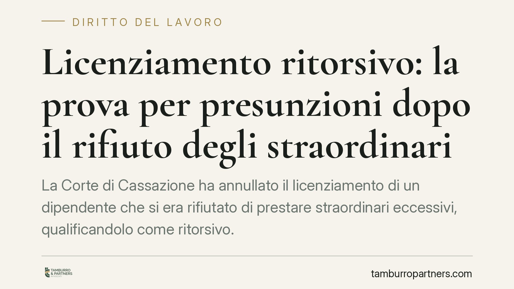
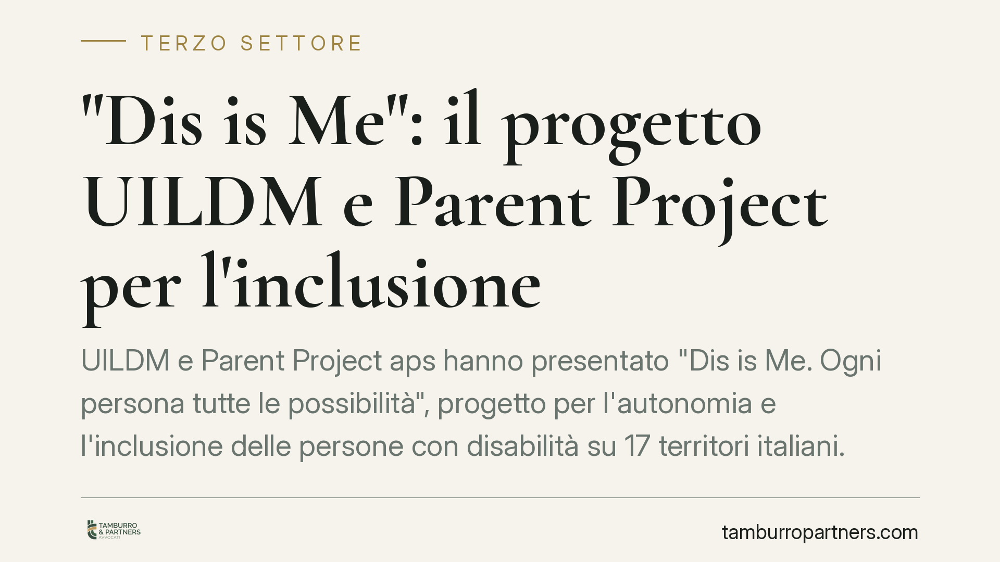
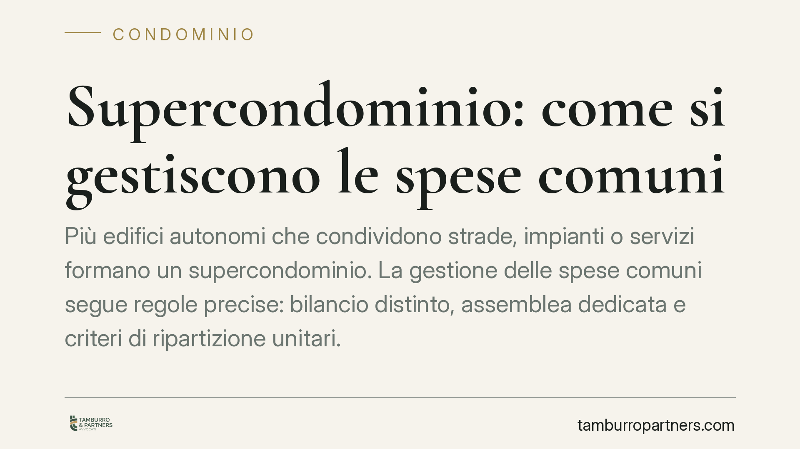
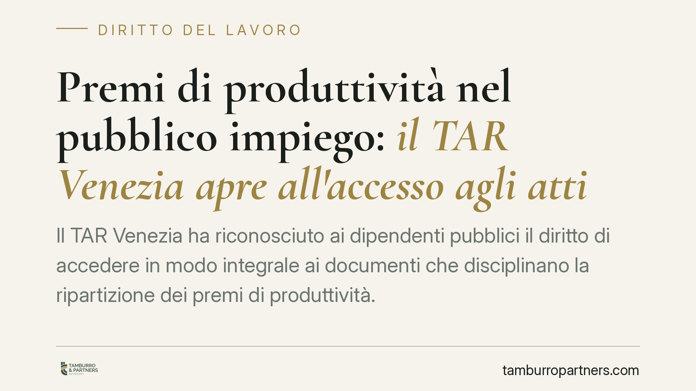
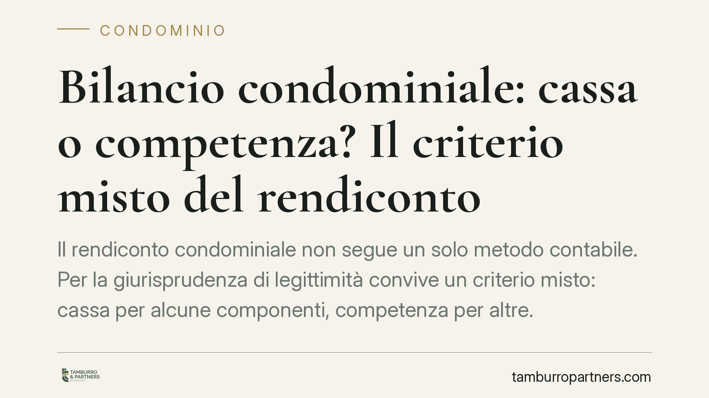
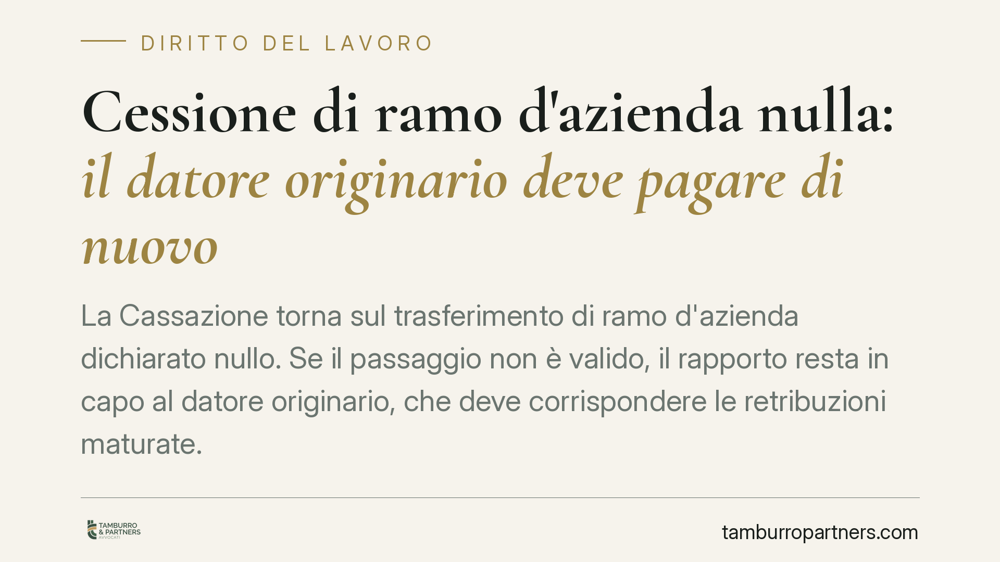

Mediazione immobiliare: la provvigione non si riduce senza prova del danno
Il Tribunale di Torino ha stabilito che la provvigione del mediatore immobiliare non può essere ridotta per un presunto inadempimento se il cliente non prova il danno subito. Confe…

Pagamenti PA e debiti fiscali: come funzionano le nuove trattenute
La Pubblica Amministrazione deve verificare la posizione fiscale prima di pagare stipendi e compensi sopra una certa soglia. In presenza di debiti iscritti a ruolo oltre 5.000 euro…

Sospensione dei militari no vax: il rifiuto del vaccino non è controindicazione medica
Il rifiuto del vaccino Covid da parte di personale militare, motivato da convinzioni personali, non equivale a una controindicazione medica e non esclude la legittimità della sospe…

Nullità del mutuo per violazione di norme penali: tra nullità virtuale e responsabilità da concessione abusiva di credito
Un finanziamento può essere travolto da nullità quando l'operazione viola norme penali a presidio della corretta gestione del credito. Ma il confine tra nullità del contratto e mer…

Verbale di assemblea via email: i termini per impugnare non decorrono
La Corte di Cassazione torna sul tema della comunicazione del verbale assembleare. L'invio tramite email ordinaria, priva di valore certo, non è idoneo a far decorrere il termine d…

Malattia professionale: la prescrizione decorre dalla consapevolezza
La Corte di Cassazione, Sezione Lavoro, torna sul tema della prescrizione nel risarcimento da malattia professionale. Il termine decennale non parte dalla diagnosi, ma dal momento …

Prestito tra familiari via bonifico: cosa scrivere nella causale
Prestare denaro a un figlio, al coniuge o a un convivente è prassi comune. Ma se la somma transita via bonifico senza una causale chiara, il rischio è duplice: che l'erario la cons…

Falsificare il software delle ferie: quando il licenziamento è legittimo
La Corte di Cassazione, Sezione Lavoro, ha confermato il licenziamento per giusta causa di un dipendente pubblico che alterava il gestionale aziendale per accreditarsi ferie non sp…

Condominio orizzontale: le parti comuni tra edifici autonomi
La Corte di Cassazione ha chiarito che scale, ballatoi e altri manufatti di collegamento tra edifici autonomi rientrano tra le parti comuni quando manca un titolo di proprietà cont…

Il rapporto avvocato-cliente nasce con il contratto di patrocinio, non con la procura
Il Consiglio Nazionale Forense ribadisce un principio spesso frainteso: il rapporto tra avvocato e cliente non dipende dal rilascio della procura, ma nasce con il contratto di patr…
Scarpe e oggetti sul pianerottolo condominiale: cosa dice la legge
Lasciare scarpe, scarpiere o biciclette sul pianerottolo è abitudine diffusa, ma il pianerottolo è parte comune. La differenza tra un appoggio tollerabile e un'occupazione che lede…

Licenziamento ritorsivo: la prova per presunzioni dopo il rifiuto degli straordinari
La Corte di Cassazione ha annullato il licenziamento di un dipendente che si era rifiutato di prestare straordinari eccessivi, qualificandolo come ritorsivo. Il punto rilevante rig…

"Dis is Me": il progetto UILDM e Parent Project per l'inclusione
UILDM e Parent Project aps hanno presentato "Dis is Me. Ogni persona tutte le possibilità", progetto per l'autonomia e l'inclusione delle persone con disabilità su 17 territori ita…

Supercondominio: come si gestiscono le spese comuni
Più edifici autonomi che condividono strade, impianti o servizi formano un supercondominio. La gestione delle spese comuni segue regole precise: bilancio distinto, assemblea dedica…
Bilancio condominiale: come verificarne la correttezza
Il bilancio condominiale non è un documento da approvare a scatola chiusa. Ogni condòmino ha il diritto di esaminarlo, confrontarlo con la documentazione e verificarne la coerenza …

Premi di produttività nel pubblico impiego: il TAR Venezia apre all'accesso agli atti
Il TAR Venezia ha riconosciuto ai dipendenti pubblici il diritto di accedere in modo integrale ai documenti che disciplinano la ripartizione dei premi di produttività. Una pronunci…
Obbligo vaccinale ai militari: per la Corte UE non è discriminatorio
La Corte di giustizia dell'Unione Europea ha affrontato il tema dell'obbligo vaccinale anti-Covid per i militari, escludendo che la differenza di trattamento rispetto al personale …

Bilancio condominiale: cassa o competenza? Il criterio misto del rendiconto
Il rendiconto condominiale non segue un solo metodo contabile. Per la giurisprudenza di legittimità convive un criterio misto: cassa per alcune componenti, competenza per altre. La…

Cessione di ramo d'azienda nulla: il datore originario deve pagare di nuovo
La Cassazione torna sul trasferimento di ramo d'azienda dichiarato nullo. Se il passaggio non è valido, il rapporto resta in capo al datore originario, che deve corrispondere le re…

Trasparenza retributiva: cosa puoi davvero chiedere sullo stipendio dei colleghi
Dal 7 giugno 2026 gli Stati membri devono recepire la Direttiva UE 2023/970 sulla trasparenza retributiva. La novità: il lavoratore potrà chiedere i livelli salariali medi per cate…

Verbale assembleare agli assenti: senza piano di riparto la delibera è annullabile
Il Tribunale di Napoli ha ritenuto annullabile la delibera condominiale quando il verbale trasmesso ai condòmini assenti non contiene il piano di riparto delle spese. L'omissione è…

Vietare gli affitti brevi in condominio: cosa dice la legge
Gli affitti brevi convivono spesso male con gli equilibri condominiali. Ma il singolo proprietario può essere obbligato a rinunciarvi? La risposta dipende dal tipo di regolamento e…

Bonus donne 2026: nuove regole sull'esonero contributivo
Il decreto legge 62/2026 ridisegna il cosiddetto bonus donne, allargando la platea delle lavoratrici interessate ma modulando la durata dell'esonero contributivo in base al grado d…

Documenti condominiali: quando il condòmino può agire contro l'amministratore
Una recente pronuncia del Tribunale di Roma fissa un punto preciso: il condòmino che vuole fare causa all'amministratore per ottenere i documenti deve prima dimostrare di averli ri…

Rumori e odori molesti in condominio: quando spetta il risarcimento
Rumori dal piano di sopra, odori di cucina che invadono l'appartamento, vibrazioni di impianti: sono le cosiddette immissioni. Quando superano la normale tollerabilità il danneggia…

Fondi pensione: le possibili novità su capitale e rendita vitalizia
La manovra di bilancio in corso di approvazione punta a ridisegnare l'erogazione delle prestazioni dei fondi pensione: più capitale liquidabile subito e nuove formule di rendita. L…

Multe in condominio: quando bastano la maggioranza e quando serve l'unanimità
Le multe condominiali per violazione del regolamento sono ammesse, ma la loro introduzione segue regole diverse a seconda del contenuto. Entro i limiti dell'art. 70 disp. att. c.c.…

Lavoro povero: non solo paga bassa, ma discontinuità e part-time involontario
Una recente analisi della Fondazione Studi Consulenti del Lavoro ribalta un luogo comune: il lavoro povero non nasce solo da retribuzioni orarie basse, ma soprattutto da discontinu…

Trasparenza retributiva: i nuovi obblighi per le aziende
Il decreto italiano che recepisce la direttiva UE 2023/970 ridisegna la trasparenza retributiva. L'obbligo di reporting sui salari scatta solo per le aziende con almeno 100 dipende…

Libro Unico del Lavoro e busta paga: obblighi e sanzioni per il datore
Il Libro Unico del Lavoro (LUL) e il prospetto paga restano i due documenti che certificano il rapporto di lavoro. Tenuta, contenuti e conservazione sono regolati per legge, e gli …